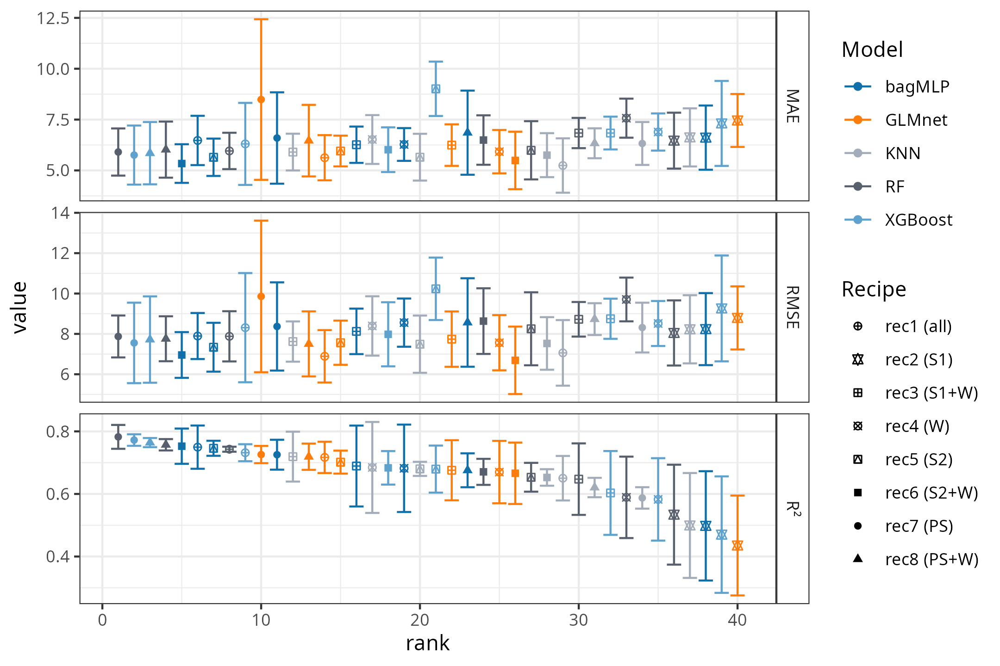
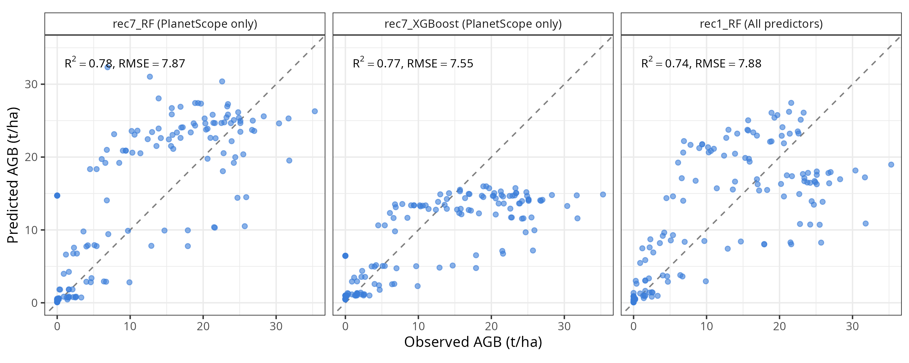
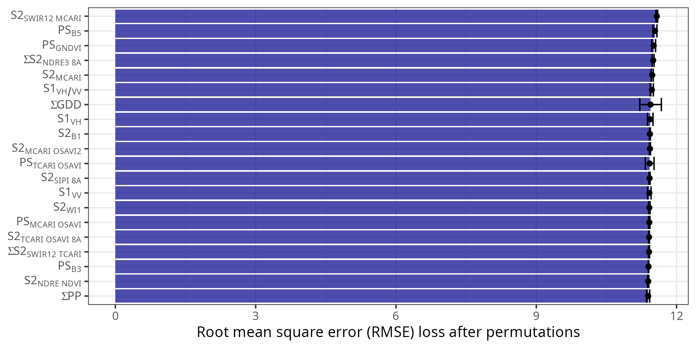
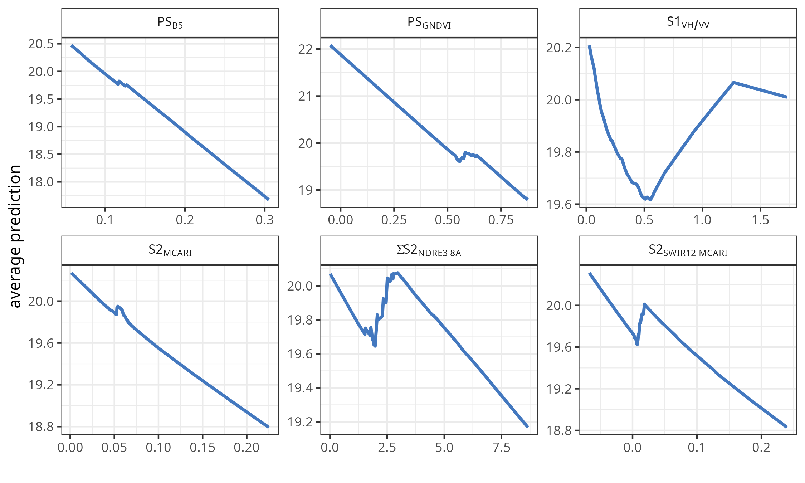

An explainable machine learning framework for estimating and forecasting wheat above‑ground biomass using Sentinel‑1, Sentinel‑2, PlanetScope, and in‑situ weather data
Global food security faces increasing challenges under climate change, making accurate monitoring of wheat (Triticum aestivum) critical. This study presents an explainable machine learning (ML) framework to estimate in-season wheat above-ground biomass (AGB) and to explore harvest forecasting one to four months ahead, integrating in-situ weather and soil moisture data with Sentinel-1, Sentinel-2, and PlanetScope imagery across four Mediterranean wheat field-seasons (2020–2023) in central Chile. We evaluated 41 models—40 recipe-algorithm combinations spanning eight sensor-combination recipes and five ML algorithms (Random Forest [RF], XGBoost, GLMnet, bagMLP, and KNN), plus a stacked ensemble—and assessed their spatial transferability with a leave-one-site-out cross-validation (LOSO-CV) scheme across the four site-seasons, with model transparency assessed via the DALEX framework.
For in-season estimation (stage 1), the best LOSO-CV configuration (RF using only PlanetScope predictors, rec7) reached R²=0.78 (RMSE=7.87 t/ha, MAE=5.90 t/ha). A sensor-ablation analysis showed that Sentinel-2 reduced RMSE by 23.4% relative to a weather-only baseline, Sentinel-1 added essentially no further skill (+0.5%), and PlanetScope contributed a further 5.7% reduction. DALEX analysis of the stacked ensemble identified a Sentinel-2 SWIR-related chlorophyll index (S2SWIR12-MCARI), two PlanetScope band/index predictors, a cumulative Sentinel-2 red-edge index, and the Sentinel-1 VH/VV backscatter ratio as the leading, comparably important predictors, spanning optical, SAR, and accumulated-thermal-time variables. As a secondary, exploratory objective, the same LOSO-CV framework was used to forecast AGB at harvest one to four months in advance; skill (RF, all predictors) was modest and decayed sharply with lead time (R² from 0.46 at one month to 0.10 at four months; RMSE from 4.5 to 6.5 t/ha), highlighting the need for larger multi-site networks to support reliable multi-month forecasting. This multi-sensor, cloud-resilient framework provides a transferable and explainable basis for in-season AGB monitoring in Mediterranean wheat systems.
above-ground biomass, Sentinel‑1, Sentinel‑2, PlanetScope, soil moisture, machine learning, precision agriculture
Introduction
As the world population is projected to reach 9.8 billion by 2050 (UN, 2024), food security is expected to face significant challenges (Bahar et al., 2020), which are further intensified by climate change (Chen, 2025). Wheat (Triticum aestivum) is the most consumed crop worldwide, and its production is key for food security (FAO, 2025). Furthermore, droughts significantly impact agriculture, as evidenced by the decrease in crop yield (Mishra et al., 2015; Naumann et al., 2021; Santini et al., 2022). In fact, global wheat production could drop by 13% by mid-century under climate change (Pequeno et al., 2024). Quantifying above-ground biomass (AGB) is of utmost importance since it allows us to monitor and optimize agricultural processes (Dietz et al., 2021). Proxies of vegetation productivity derived from vegetation indices can help monitor and predict the impact of drought at a regional scale (Zambrano, 2021; Zambrano et al., 2018, 2016). However, on a farm level, we must quantify this impact using crop yield as a productivity metric, which can aid in determining the economic impact of seasonal variations in crop yield. Generally, the estimation and monitoring of agricultural production is made by using three methods: i) crop growth models (Lobell and Burke, 2010; Wang et al., 2023), ii) surveys (Gardner et al., 1980), and iii) in-situ measurements. The models help predict how crops will grow, yield, and produce under different environmental and management conditions, which is useful for forecasting food supply and understanding how climate change and policy decisions affect global agriculture, but the downside is that they require many different variables to obtain meaningful results. The objective of the surveys is to collect timely and reliable data from the agricultural sector in order to carry out statistical studies of crops, but it provides summaries at administrative units (e.g., states, districts) (Gardner et al., 1980). Additionally, field measurements provide reliable data—known as the ground truth—that can be used for comparison with models and surveys; however, this process is costly and time-consuming.
The use of empirical models that are based solely on remote sensing sources has become a straightforward option for the estimation of crop yield, especially for cereals (Lischeid et al., 2022). There are multiple remote sensing methods to estimate AGB, among which the methods based on multispectral imaging (Marshall et al., 2022; Segarra et al., 2022), Synthetic Aperture Radar (SAR) (Chao et al., 2019; Hu et al., 2024), LiDAR (Light Detection and Ranging) (Bates et al., 2021), hyperspectral (Yue et al., 2021), or combination of them (David et al., 2022; Li et al., 2024; Wang et al., 2016), stand out, offering promising results. Estimation methods based on SAR data focus on the measurement of the structure of the crop, soil moisture, and their temporal variations. An advantage of this technique is that it can penetrate the cloud cover, allowing a constant measurement in the study area; its disadvantage is the angle of observation to the crop and the speckle noise inherent to the signal (Lopes et al., 1990; Maghsoudi et al., 2012; Moran et al., 1997). Estimation methods based on LiDAR and hyperspectral data focus on the measurement of the crop structure and phenological monitoring of the crop (Brovkina et al., 2017; Luo et al., 2017; Wang et al., 2016). Its main disadvantage is the high cost of implementation, which limits its proliferation. Another common approach is the use of spectral indices (e.g., NDVI, EVI, etc.) derived from optical sensors such as Sentinel-2 (David et al., 2022) for specific dates. Furthermore, the use of accumulated spectral indices (Peroni Venancio et al., 2020) over the growing season has shown improvements in estimating biomass/yield compared with using indices just for specific dates. The main advantage is its simplicity and strong correlation with the observed biomass. Currently, the research about estimating biomass is moving forward integrating Sentinel 1 & 2 (Uribeetxebarria et al., 2023), LiDAR, hyperspectral, and Landsat missions (He et al., 2018; Zhang et al., 2023), which aids in better monitoring of the crop’s growth stages (Shen et al., 2023).
Effective machine learning (ML) methods, along with remote sensing data, are increasingly used to estimate the AGB in various cereals, including wheat. In Southern Brazil, (Atkinson Amorim et al., 2022) collected images from unmanned aerial vehicles (UAV) and used random forest, support vector regressions, and neural networks to estimate AGB in wheat. Their results reached a R² of 0.90 and a root mean square error (RMSE) of 0.83 t/ha. In another study, (Liu et al., 2024) used spectral data obtained from UAV, phenological information, and multiple machine learning algorithms to estimate AGB on wheat, having results of an R² ranging from 0.84 to 0.91 and an RMSE of 1.69 to 2.11 t/ha. Considering another approach, (Marshall et al., 2022) used hyperspectral and Sentinel-2 data and applied random forest and partial least squares to estimate wheat AGB on different stages of the crop. Their results achieve an R²=0.81 and RMSE=3.7 t/ha with the random forest model. Further, for different types of grass cover, Sentinel-1 has been tested to estimate AGB with varied results (David et al., 2022; Li et al., 2024; Nuthammachot et al., 2022). The benefits of SAR Sentinel-1 are that it can gather dependable data even on cloudy days, which is not possible with optical sensors like Sentinel-2 and Landsat. Additionally, Sentinel-1’s backscatter is closely linked to the dielectric constant, making it a proxy of soil moisture (Fan et al., 2025; Zhu et al., 2024), and, therefore, the amount of water crops can absorb from the soil, which affects their growth. Thus, it is worthwhile to explore its usefulness for AGB prediction.
Here, we aim to develop and evaluate an explainable ML framework for estimating wheat AGB during the growing season from multi-sensor remote sensing (Sentinel-1, Sentinel-2, and PlanetScope) and in-situ weather and soil moisture data, and to assess its spatial transferability under a leave-one-site-out cross-validation (LOSO-CV) scheme across four Mediterranean wheat field-seasons. As a secondary, exploratory objective, we evaluate whether the same predictors and modeling framework support forecasting AGB at harvest one to four months in advance. We defined three specific objectives: i) derive predictors from weather, soil moisture, Sentinel-1, Sentinel-2, and PlanetScope data; ii) apply ML algorithms together with explainable-AI techniques to estimate the spatiotemporal variation of wheat AGB through the growing season and identify which sensors and variables drive model performance; and iii) explore the feasibility of forecasting AGB at harvest at four lead times (one to four months before harvest) using the same modeling and LOSO-CV validation framework.
Materials and Methods
Study Area
The study was conducted during the 2020–2023 growing seasons (June–January) across four wheat field sites (Triticum aestivum) located in central Chile: i) La Cancha in the Metropolitan region, ii) Hidango in the O’Higgins region (two different fields in two seasons), and iii) Villa Baviera in the Maule region. Sampling took place in delineated fields at each site (Figure Figure 1). In Hidango, separate fields were established for the 2021-2022 and 2022-2023 seasons; in Villa Baviera and La Cancha, sampling occurred during the 2020-2021 and 2022-2023 seasons, respectively. To capture spatial variability and ensure representativeness, sampling points were randomly selected and evenly distributed: five in La Cancha, Villa Baviera, and the first season in Hidango; and six in the second season in Hidango (Figure Figure 1).

A variety of spring wheat was planted in Villa Baviera (Llareta-INIA; (Garrido et al., 2013)), while the other sites had winter wheat (Irafen-INIA and Pantera-INIA; (Del Pozo et al., 2023)). Spring wheat is typically sown in late winter or early spring and harvested within the same year, whereas winter wheat is sown in autumn, requires vernalization, and is harvested the following summer (Liu and Chen, 2025; Zhao et al., 2022). According to the FAO–UNESCO Soil Map of the World (FAO, 2014); La Cancha is characterized by shallow, fine-textured Regosols on nearly flat terrain; Hidango presents fine-textured Luvisols on gently undulating landscapes; and Villa Baviera features deep, well-structured Nitisols on slightly sloped land. The climate in these regions is Mediterranean with winter rainfall (Csb) under the Köppen–Geiger classification (Beck et al., 2023); Hidango, however, exhibits an oceanic influence. Mean annual precipitation ranges from 700 to 900 mm, with average temperatures between 11 and 12 °C.
Data acquisition and processing
Field data
AGB, defined as the total dry mass of dead and living plant organs per unit ground area (Chave et al., 2014), was sampled at distinct wheat phenological stages across each season. Phenological stages were identified using the Zadoks scale, which describes 10 principal growth stages from sowing to ripening (Zadoks et al., 1974). At each sampling point (Figure Figure 1), biomass from a 0.25 m² area was harvested, dried in a forced-air oven at 70°C for three days, weighed on a precision scale, and converted to t/ha. Sampling intervals were planned to capture variability across growth stages, ensuring representative data for each field and season. The temporal distribution of sampling dates across phenological stages is illustrated in Figure Figure 2, with NDVI time series indicating canopy development over the season. A total of 153 AGB wheat samples were collected: 88 in Hidango (40 in 2021–2022 and 48 in 2022-2023), 35 in La Cancha, and 30 in Villa Baviera.

Additionally, soil moisture was measured using TEROS 12 sensors (METER Group, USA), which operate via a capacitance/frequency domain method to assess dielectric permittivity, achieving ±1% accuracy in typical mineral soils (Fragkos et al., 2024). The sensors were installed at a central point within each field’s sampling area at depths of 15, 30, and 45 cm in La Cancha and Villa Baviera, and 15, 50, and 75 cm in Hidango in both seasons. Each sensor recorded data at 30-minute intervals, and daily values were computed by averaging the measurements from each day.
Soil water content (cm³/cm³) measured by the sensors was converted to water depth (mm) within the 0–55 cm using the specific depth of the profile at which the sensor was installed.
Weather Data
Precipitation and temperature data were obtained from automatic meteorological stations managed by the Red Agrometeorológica de Chile. This national network provides continuous, open-access weather data for agricultural use (http://agromet.inia.cl; http://agrometeorologia.cl), recording several meteorological variables at hourly intervals. Each station is equipped with a Texas Electronics TE525MM-L25 tipping-bucket rain gauge for precipitation and a Vaisala HMP60-L11 sensor for air temperature and relative humidity (Chacón C., 2019). For each study site, the nearest meteorological station was selected (Table Table 1), and hourly precipitation and air temperature data were downloaded starting from the sowing date.
| Field | Nearest station | ||||
|---|---|---|---|---|---|
| EMA code | Name | Institution | Coordinates | Distance to field (km) | |
| Hidango | 260 | Hidango | INIA | 34.1°S; 71.8°W | 1.03 |
| La Cancha | 50 | Chocalan | FDF | 33.73°S; 71.21°W | 1.16 |
| Villa Baviera | 103 | Parral Norte | FDF | 36.23°S; 71.73°W | 20.89 |
Daily precipitation (mm) was cumulatively summed over the growing season to obtain daily accumulated precipitation (mm, ∑PP). Daily minimum (Tmin) and maximum (Tmax) temperatures were used to compute Growing Degree Days (GDD):
\[GDD = \frac{\left( T_{\max} + T_{\min} \right)}{2} - T_{base}\]
A base temperature of 2°C was applied for the early growth stages (sowing to tillering), while 6°C was used for reproductive stages (stem elongation to ripening) (Del Pozo et al., 1987). Negative GDD values were set to zero. Then, the accumulated GDD values were calculated by summing the daily GDD from the start of the season of each field (∑GDD).
Remote Sensing Data
Satellite time series imagery from three missions—Sentinel-1, Sentinel-2, and PlanetScope—were used to derive predictors for aboveground biomass (AGB) modeling. These datasets include radar and optical sensors, covering different spectral ranges (SAR, visible, NIR, SWIR) and having different spatial resolutions.
The Sentinel‑1 (S1) mission, operated by the European Space Agency (ESA), consists of a constellation of C-band synthetic aperture radar (SAR) satellites that operate in several acquisition modes (Interferometric Wide—IW, Extra Wide—EW, and Stripmap—SM), with spatial resolutions ranging from 5 to 40 m and a swath width up to 410 km. Data acquisition is independent of cloud cover or sunlight, enabling consistent time-series generation under any weather condition. We used Level‑1 Ground Range Detected (GRD) products from Sentinel‑1A (S1A), the only satellite of the constellation operational during the study period, as Sentinel‑1B stopped transmitting in 2022 and Sentinel‑1C was not yet launched. GRD products are radiometrically calibrated, multi-looked, and terrain-corrected using a digital elevation model, then projected to the WGS84 datum (Table Table 2). These products are delivered in dual-polarization (VV, VH or HH, HV), depending on the acquisition mode and region, with a pixel spacing of 10 to 40 m (Torres et al., 2012).
Sentinel‑2 (S2) is a dual-satellite optical mission carrying the MultiSpectral Instrument (MSI), which captures 13 spectral bands across the visible, near-infrared (NIR), and shortwave infrared (SWIR) regions. Spatial resolution varies by band (10, 20, or 60 m), and the system provides global coverage with a revisit time of ~5 days at the Equator. We used Level‑2A surface reflectance products, which are atmospherically corrected (bottom-of-atmosphere, BOA) and orthorectified (Table Table 2). These products include cloud and shadow masks, aerosol optical thickness (AOT), and water vapor content layers, along with scene classification maps and pixel-level quality information (Drusch et al., 2012).
| Dataset | Collection | Bands | Central wavelength (nm) | Resolution | ||
|---|---|---|---|---|---|---|
| Spatial (m) | Revisit (days) | |||||
| Sentinel-1 | Ground Range Detected (GRD) | VV | 5.546×107 (C-Band) | 10 | 6 | |
| VH | 5.546×107 (C-Band) | 10 | ||||
| Sentinel-2 | Level-2A | 1 - Coastal aerosol | 442.7 (A) / 442.2 (B) | 60 | 5 | |
| 2 - Blue | 492.7 (A) / 492.3 (B) | 10 | ||||
| 3 - Green | 559.8 (A) / 558.9 (B) | 10 | ||||
| 4 - Red | 664.6 (A) / 664.9 (B) | 10 | ||||
| 5 - Vegetation Red Edge (RE1) | 704.1 (A) / 703.8 (B) | 20 | ||||
| 6 - Vegetation Red Edge (RE2) | 740.5 (A) / 739.1 (B) | 20 | ||||
| 7 - Vegetation Red Edge (RE3) | 782.8 (A) / 779.7 (B) | 20 | ||||
| 8 - NIR | 832.8 (A) / 832.9 (B) | 10 | ||||
| 8A - Vegetation Red Edge | 864.7 (A) / 864.0 (B) | 20 | ||||
| 9 - Water vapour | 945.1 (A) / 943.2 (B) | 60 | ||||
| 10 - SWIR - Cirrus | 1373.5 (A) / 1376.9 (B) | 60 | ||||
| 11 - SWIR (SWIR1) | 1613.7 (A) / 1610.4 (B) | 20 | ||||
| 12 - SWIR (SWIR2) | 2202.4 (A) / 2185.7 (B) | 20 | ||||
| PlanetScope | Level 3B Surface Reflectance (SR) | 1 - Coastal Blue | 441.5 | 3 | 1 | |
| 2 - Blue | 490 | 3 | ||||
| 3 - Green I | 531 | 3 | ||||
| 4 - Green | 565 | 3 | ||||
| 5 - Yellow | 610 | 3 | ||||
| 6 - Red | 665 | 3 | ||||
| 7 - Red Edge | 705 | 3 | ||||
| 8 - NIR | 865 | 3 |
PlanetScope (PS) is a commercial constellation of ~120 CubeSats operated by Planet Labs, which capture daily multispectral imagery at a nominal resolution of 3 m. The constellation includes different sensor types deployed over time, such as Dove-C (three- or four-band imagers with a split-frame NIR filter), Dove-R (four-band imagers with a butcher-block filter), and SuperDove (eight-band imagers including the visible, NIR, and Red Edge bands). We used Level‑3B Surface Reflectance products, which are orthorectified and atmospherically corrected using Planet’s in-house model based on global aerosol assumptions. Although not fully corrected for haze or thin cirrus clouds, the products are radiometrically calibrated, georeferenced to sub-pixel accuracy, and delivered with metadata and quality indicators (Roy et al., 2021). Due to the sensor transition that occurred during the study period, both Dove and SuperDove imagery were included. To ensure consistency across the dataset, only the four bands common to all sensor types (Blue, Green, Red, and NIR) were used.
S1 Ground Range Detected (GRD) imagery was accessed via Google Earth Engine; S2 Level-2A products were obtained from the Planetary Computer; and PS imagery was acquired through the Planet Explorer platform, excluding images with cloud cover over the fields. A total of 185 S1, 208 S2, and 180 PS images were used across the four fields in their respective seasons: Hidango 2021-2022 (S1: 52; S2: 60; PS: 47), Hidango 2022-2023 (S1: 56; S2: 56; PS: 40), La Cancha 2022-2023 (S1: 43; S2: 53; PS: 41), and Villa Baviera 2020-2021 (S1: 34; S2: 39; PS: 52).
Preprocessing of remote sensing data
For data preprocessing, Sentinel-1 backscatter values (VV and VH) were first converted from decibels to linear scale, and the VH/VV polarization ratio was then computed. No additional masking was applied to Sentinel-1, as its GRD products undergo standard preprocessing, including radiometric calibration, multi-looking, and orthorectification. For Sentinel-2 and PlanetScope, reflectance values were scaled by dividing by 10,000, and values outside the [0.01, 1] range were discarded. Low-quality Sentinel-2 pixels were identified using the Scene Classification Layer (SCL), excluding classes 0, 1, 2, 3, 8, 9, and 10. For PlanetScope, the Universal Data Mask (UDM) was used to retain only clear-sky pixels.
All variables were interpolated to create continuous daily time series, ensuring they aligned with AGB sampling dates and allowing for biomass estimation at consistent temporal offsets across different fields and seasons. For Sentinel-1, VV, VH, and VH/VV ratio were temporally extended by duplicating each acquisition across the days until the midpoint to the following observation. For Sentinel-2 and PlanetScope, spectral bands were interpolated using a Kalman smoothing approach (Moritz and Bartz-Beielstein, 2017), and cumulative sums were computed from the start of each season. Daily values from all sources, and cumulative sums for Sentinel-2 and PlanetScope, were extracted at sampling locations and later used as input variables for AGB estimation.
Selection and processing of VIs
A total of 53 vegetation indices (VIs) were selected to estimate AGB using the daily interpolated S2 and PS data (Table Table 3). Daily cumulative sums of these VIs were also computed from the start of each season to capture integrated vegetation dynamics. Furthermore, 36 of these 53 VIs originally derived from the B8 band were recalculated using the B8A band (available only for S2) to assess potential differences in vegetation response between these two near-infrared bands, resulting in a total of 89 VIs across both products. The indices were chosen based on their relevance for assessing vegetation status, biomass estimation, and yield prediction in wheat, forage, maize, and similar crops (Peng et al., 2023; Segarra et al., 2022; Uribeetxebarria et al., 2023; Wang et al., 2022; Wu et al., 2008; Zheng et al., 2017). Both daily values and cumulative VIs were used as predictor variables in the modeling framework.
Table Table 3 outlines the vegetation indices (VIs) chosen for the machine learning (ML) model after eliminating those that were highly correlated. To see all the other VIs that were used, please refer to the Supplementary Material Table S1.
| N° | Dataset used | Name | Abbreviation | Formula | Reference |
|---|---|---|---|---|---|
| 1 | S2 | OSAVI Variant | OSAVI2 | \(\frac{1.16 \cdot (RE3 - Red)}{(RE3 + Red + 0.16)}\) | Jin et al. (2020) |
| 2 | S2 | - | MCARI/OSAVI2 | \(MCARI/{OSAVI}_{2}\) | Wu et al. (2008) |
| 3 | S2 | SWIR 11 Related MCARI | MCARISWIR11 | \((\left( RE_{1} - SWIR_{1} \right) - 0.2 \cdot (RE_{1} - Green)) \cdot (RE_{1}/SWIR_{1})\) | Herrmann et al. (2011) |
| 4 | S2 | SWIR 11 Related TCARI | TCARISWIR11 | \(3 \cdot ((RE_{1} - SWIR_{1}) - 0.2 \cdot (RE_{1} - Green) \cdot (RE_{1}/SWIR_{1}))\) | Herrmann et al. (2011) |
| 5 | S2 | SWIR 12 Related MCARI | MCARISWIR12 | \((\left( RE_{1} - SWIR_{2} \right) - 0.2 \cdot (RE_{1} - Green)) \cdot (RE_{1}/SWIR_{2})\) | Herrmann et al. (2011) |
| 6 | S2* | Normalized Difference Red-edge Index 3 | NDRE3 | \((NIR - RE_{3})/(NIR + RE_{3})\) | Magney et al. (2017) |
| 7 | S2* | Water Index | WI | \(NIR/Water\ vapour\) | Jin et al. (2020) |
| 8 | S2 - PS | Modified Chlorophyll Absorption in Reflectance Index | MCARI | \((\left( RE_{1} - Red \right) - 0.2 \cdot (RE_{1} - Green)) \cdot (RE_{1}/Red)\) | Daughtry (2000) |
| 9 | S2 - PS | Transformed Chlorophyll Absorption in Reflectance Index | TCARI | \(3 \cdot ((RE_{1} - Red) - 0.2 \cdot (RE_{1} - Green) \cdot (RE_{1}/Red))\) | Haboudane et al. (2002) |
| 10 | S2 - PS | - | TCARI/OSAVI | \(TCARI/OSAVI\) | Haboudane et al. (2002) |
| 11 | S2 - PS | - | MCARI/OSAVI | \(MCARI/OSAVI\) | Daughtry (2000) |
| 12 | S2* - PS | Simple Ratio | SR | \(NIR/Red\) | Tucker (1979) |
| 13 | S2 - PS | Optimized Soil-Adjusted Vegetation Index | OSAVI | \(\frac{1.16 \cdot (NIR - Red)}{(NIR + Red + 0.16)}\) | Rondeaux et al. (1996) |
| 14 | S2 - PS | Chlorophyll Index - Red | CIred | \((NIR/Red) - 1\) | Clevers and Gitelson (2013) |
| 15 | S2 - PS | Chlorophyll Vegetation Index | CVI | \((NIR/Green) \cdot (Red/Green)\) | Vincini et al. (2008) |
| 16 | S2 - PS | Enhanced Vegetation Index | EVI | \(\frac{2.5*(NIR - Red)}{((NIR + 6*Red - 7.5*Blue) + 1)}\) | Jiang et al. (2008) |
| 17 | S2 - PS | Normalized Difference Vegetation Index | NDVI | \((NIR - Red)/(NIR + Red)\) | Rouse et al. (1974) |
| 18 | S2 - PS | Green NDVI | GNDVI | \((NIR - Green)/(NIR + Green)\) | Gitelson et al. (1996) |
| 19 | S2 - PS | Normalized Difference Red-edge Index 1 | NDRE1 | \((NIR - RE_{1})/(NIR + RE_{1})\) | Magney et al. (2017) |
| 20 | S2 - PS | - | NDRE/NDVI | \(NDRE_{1}/NDVI\) | Raper and Varco (2015) |
| 21 | S2 - PS | Structure Insensitive Pigment Index | SIPI | \((NIR - Blue)/(NIR - Red)\) | Peñuelas et al. (1994) |
Modeling with Machine Learning Algorithms
Overview of the modeling process

Figure Figure 3 shows a general scheme for the modeling process. The dataset for modeling is composed of the in situ AGB data and the remote sensing predictors derived from S1, S2, and PlanetScope, as well as the weather variables. All this data is generated as a time series for each growing season in each site. Then a feature engineering process is applied to the data before running the models. Thereafter, the dataset is used in the first stage to run the ML models to estimate the spatio-temporal variation of AGB within the growing season. After achieving the initial results, we tested the ML prediction models of AGB at harvest by using covariates from four lead times: 1, 2, 3, and 4 months. The ML models for estimation and prediction pass through a hyperparameter optimization and an explainable ML process.
We tested five machine learning (ML) algorithms to estimate spatio-temporal in-season and AGB (stage 1) and to predict AGB at harvest (stage 2): extreme gradient boosting (XGBoost; (Chen and Guestrin, 2016)), random forest (RF; (Ho, 1995)), regularized generalized linear regression (GLMnet; (Hastie et al., 2015)), single layer, feed-forward neural networks (bagMLP; (Breiman, 1996a)), and K-nearest neighbors (KNN; (Hechenbichler and Schliep, 2004)). We also tested an ensemble model which combines the predictions for the five models (Breiman, 1996b; Wolpert, 1992). These models were selected based on their robustness in regression tasks, capacity to handle high-dimensional data, interpretability, and for being state-of-the-art.
Defining dataset recipes for estimation and prediction models
The dataset used for the estimation modeling (stage 1) included covariates derived from soil moisture data, weather variables, remote sensing spectral information, and VIs. The response variable was AGB (t/ha), obtained from field measurements. We split the predictor variables into different subsets with the aim of evaluating independently how weather, Sentinel-1, Sentinel-2, and PlanetScope contribute to the estimation of AGB. We called each subset a recipe (rec). Thus, rec1 used all the variables; rec2 uses only Sentinel-1; rec3 uses Sentinel-1 and weather; rec4 uses only weather variables; rec5 uses only Sentinel-2; rec6 uses Sentinel-2 and weather; rec7 uses only PlanetScope; and rec8 uses PlanetScope and weather.
Feature engineering
Before running the ML modeling for estimation and prediction, we applied different preprocessing methods to the dataset. First, to fill missing data, we imputed it using k-nearest neighbor (Gower, 1971). All of the predictors were then normalized to have a standard deviation of one and a mean of zero. Also, we applied a filter to eliminate highly correlated variables (Pearson |r| ≥ 0.9), which removed one of the 43 candidate predictors (S2SWIR11_MCARI) for rec1. To document the residual multicollinearity in the full predictor set, we additionally computed variance inflation factors (VIF) on the 42 remaining predictors and iteratively removed variables with VIF > 10, which reduced the set to 22 variables. This VIF audit was performed for transparency only and was not applied as a modeling step, since the regularized (GLMnet) and tree-based (RF, XGBoost) algorithms used here are tolerant of collinearity among spectral indices; the full audit is provided in the project repository.
Estimation models for AGB within the growing season
For the estimation model (stage 1), covariates from the same day as the AGB measured in situ were employed. Thus, we generate a modeling dataset by including the value of the covariates for each sample point. We used a combination of 40 models, corresponding to the eight recipes multiplied by the five ML algorithms. We then ran the models, tuned them through hyperparameter optimization (see section 2.3.4), and used them to estimate AGB spatially for each day and site during the growing season. This process yields a daily spatiotemporal dataset of AGB for each site.
Prediction models for AGB at harvest
From the estimation modeling (stage 1), we obtained the daily spatio-temporal AGB within the growing season. For prediction, we took the AGB of the harvest date per site as the response variable. As covariates, we selected the remote sensing covariates (S1, S2, and PS variables in Table Table 3) and weather data, which lagged from one to four months before harvesting as lead time. To generate the dataset for prediction modeling, we took 100 random samples per site for the responses and covariates. In the modeling process, we used hyperparameter optimization to enhance the performance of our models and then applied them to predict aboveground biomass (AGB) at harvest for each lead time.
Hyperparameter optimization and evaluation
To tune each parameter per algorithm for the estimation and prediction modeling, we used hyperparameter optimization, defining ten random candidates per parameter combination (Table Table 4). For the estimation models (stage 1), performance was evaluated using a leave-one-site-out cross-validation (LOSO-CV) scheme, in which the data were partitioned into four folds, each corresponding to one of the four site-seasons (Hidango 2021–2022, Hidango 2022–2023, La Cancha 2022–2023, and Villa Baviera 2020–2021). For each recipe-algorithm combination, the ten hyperparameter candidates were fitted on the three remaining site-seasons and evaluated on the held-out site-season; the configuration with the highest mean R² across the four folds was selected, and its corresponding mean R², RMSE, and MAE across folds were retained as the final performance estimate. This LOSO scheme directly evaluates the spatial transferability of each model to a field/season not used for training, which is the most policy-relevant generalization scenario for operational AGB monitoring. For the prediction models (stage 2), the same LOSO-CV scheme was applied to the 100-random-samples-per-site-per-lead-time dataset, using recipe rec1 (all predictors) combined with five algorithms (RF, XGBoost, GLMnet, bagMLP, and KNN). For each lead time and algorithm, the ten hyperparameter candidates were evaluated across the four LOSO folds and the configuration with the highest mean R² across folds was retained, with its mean R², RMSE, and MAE across folds reported as the final performance estimate; selected models were then refit on the complete dataset using the chosen hyperparameters. We used the mean absolute error (MAE), root mean square error (RMSE), and r-squared (R²) metrics (see Supplementary Material Eqs. S1, S2 & S3).
Stacked ensemble model
In addition to the 40 individual recipe-algorithm combinations evaluated via LOSO-CV, we built a stacked ensemble model following (Breiman, 1996b) and (Wolpert, 1992). Using the {stacks} package (Couch and Kuhn, 2022), the tuned candidates from the stage 1 workflow set were supplied as ensemble members; a LASSO meta-learner (penalized linear regression) was fitted on their out-of-fold predictions to estimate blending weights, retaining only members with a non-zero coefficient. The selected members were then refit on the complete dataset (all four site-seasons, recipe rec1, all predictors) to produce the final ensemble model, which was used as the basis for the explainable ML analysis described below.
| Parameter | Description | Algorithm |
|---|---|---|
| trees* | An integer for the number of trees contained in the ensemble. Fixed to 1000 trees. | XGBoost, RF |
| tree_depth | An integer for the maximum depth of the tree. | XGBoost, RF |
| min_n | An integer for the minimum number of data points in a node that is required for the node to be split further. | XGBoost, RF |
| loss_reduction | A number for the reduction in the loss function required to split further. | XGBoost |
| sample_size | A number for the number (or proportion) of data that is exposed to the fitting routine. | XGBoost |
| learn_rate | A number for the rate at which the boosting algorithm adapts from iteration-to-iteration. | XGBoost |
| mtry | An integer for the number of predictors that are randomly sampled at each split when creating tree models. | XGBoost, RF |
| penalty | A non-negative number representing the total amount of regularization. | GLMnet, bagMLP |
| mixture | A number between zero and one (inclusive) denoting the proportion of L1 regularization (i.e. lasso) in the model. | GLMnet |
| hidden units | An integer for the number of units in the hidden model. | bagMLP |
| epochs | An integer for the number of training iterations. | BagMLP |
| neighbors | The number of neighbors to consider (often called k) | KNN |
| weight_func | A single character for the type of kernel function used to weight distances between samples. | KNN |
| dist_power | A single number for the parameter used in calculating Minkowski distance. | KNN |
Explainable Machine Learning with DALEX
To assess the contribution of each covariate to the model’s performance, we performed a variable importance analysis. Further, to evaluate how the most important variables impact the model’s predictions, we used partial dependence plots. For this, we used the DALEX (moDel Agnostic Language for Exploration and eXplanation). DALEX provides a model-agnostic framework for interpreting machine learning models by quantifying the impact of individual variables on model predictions. We computed permutation-based variable importance, which evaluates the increase in prediction error after permuting the values of a given variable while keeping all other variables fixed. This approach captures both main effects and interactions and is applicable across diverse model types. For estimation, we analyzed the ensemble model that used all the predictors (recipe rec1), and for prediction, we used the best model for each lead time. For each variable, we calculated the increase in root mean squared error (ΔRMSE) caused by the permutation. Higher ΔRMSE values indicate greater importance of the corresponding variable to model performance. The analysis was repeated over 50 random permutations to ensure stability of the importance rankings. The top predictors were identified by ranking variables based on the mean ΔRMSE. In addition, we calculated a “scaled dropout loss” metric to compare variable influence across lead times in the prediction models.
Software
We utilized the R programming language (R Core Team, 2025) for processing satellite data, as well as for data analysis, ML modeling, and visualization. To access satellite data, we employed the {earthdatalogin} package (Boettiger et al., 2023). For smoothing the time series of vegetation indices, we applied the {imputeTS} package (Moritz and Bartz-Beielstein, 2017). We used the {terra} package (Hijmans, 2023) and the {sf} package (Pebesma, 2018) for processing raster and vectorial data. For data science tasks and visualization, we utilized the {tidyverse} suite (Wickham et al., 2019). For machine learning modeling, we work with the {tidymodels} framework (Kuhn and Wickham, 2020). For the variable importance we used {DALEX} (Biecek, 2018). The {tmap} package (Tennekes, 2018) was employed for mapping purposes.
Results
Estimation model for AGB within the growing season
Selecting the best models
For AGB estimation, we tested 40 models generated by a combination of five machine learning algorithms and eight recipes, each evaluated using leave-one-site-out cross-validation (LOSO-CV) across the four site-seasons. Across the 40 models, R² ranged from 0.44 to 0.78, MAE from 5.2 to 9.0 t/ha, and RMSE from 6.7 to 10.2 t/ha (Figure Figure 4). RF and XGBoost were generally the best-performing algorithms, while GLMnet was the weakest overall. The recipe rec7, which uses only PlanetScope (PS) predictors, ranked first with RF (R²=0.78, RMSE=7.87 t/ha, MAE=5.90 t/ha) and second with XGBoost (R²=0.77, RMSE=7.55 t/ha, MAE=5.75 t/ha); rec8 (PS+weather) ranked third and fourth with XGBoost and RF, respectively. By contrast, rec2 (S1 only) consistently ranked among the worst recipes regardless of algorithm (ranks 36-40 of 40, R²=0.44-0.53), with its GLMnet configuration ranking last overall—indicating that Sentinel-1 backscatter alone carries little transferable information about AGB across sites and seasons. The recipe that incorporates all covariates (rec1) did not outperform the PlanetScope-only recipes; its best configuration (bagMLP) ranked sixth overall (R²=0.75, RMSE=6.96 t/ha, MAE=5.34 t/ha). This pattern is corroborated by an independent sensor-ablation analysis (Table Table 5), in which adding Sentinel-1 to a Sentinel-2+weather model changed RMSE by only -0.5% (i.e., a marginal degradation), whereas adding PlanetScope to a Sentinel-1+Sentinel-2+weather model improved RMSE by 5.7%.

Figure Figure 5 compares observed and out-of-fold predicted AGB for the top-ranked configuration (rec7_RF, PlanetScope only), its runner-up (rec7_XGBoost), and a representative all-predictors configuration (rec1_RF, rank 8 overall, R²=0.74, RMSE=7.88 t/ha) for context. The PlanetScope-only models track the 1:1 line closely across the full biomass range, including the high-biomass observations (>25 t/ha) where the all-predictors model shows a tendency to underestimate.

As an independent check on the recipe ranking above, we ran a complementary sensor-ablation analysis with fixed-hyperparameter XGBoost models under the same LOSO-CV scheme, sequentially adding sensor groups to a weather-only baseline (Table Table 5). Adding Sentinel-2 to the weather-only model reduced RMSE by 23.4%, confirming the strong contribution of optical vegetation indices. Adding Sentinel-1 to the Sentinel-2+weather model produced a negligible change in RMSE (-0.5%, i.e., a slight degradation), while subsequently adding PlanetScope reduced RMSE by a further 5.7%. This independent analysis is consistent with the recipe ranking in Figure Figure 4: optical sensors (Sentinel-2 and PlanetScope) drive most of the predictive performance, whereas Sentinel-1 SAR backscatter contributes little once optical and weather information are available.
| Sensor added | RMSE before (t/ha) | RMSE after (t/ha) | RMSE change (%) |
|---|---|---|---|
| Sentinel-2 (vs. weather only) | 9.96 | 7.63 | -23.4 |
| Sentinel-1 (vs. Sentinel-2 + weather) | 7.63 | 7.68 | +0.5 |
| PlanetScope (vs. Sentinel-1 + Sentinel-2 + weather) | 7.68 | 7.24 | -5.7 |
Explainable Machine Learning with DALEX

For the LOSO-tuned ensemble (recipe rec1, all predictors), permutation-based variable importance shows a relatively flat ranking across the leading predictors (Figure Figure 6): the Sentinel-2 SWIR-related chlorophyll index S2SWIR12_MCARI ranks highest, closely followed by two PlanetScope bands/indices (PSB5, PSGNDVI), a cumulative Sentinel-2 red-edge index (∑S2NDRE3_8A), S2MCARI, the Sentinel-1 backscatter ratio S1VH/VV, ∑GDD, S1VH, S2B1, and S2MCARI/OSAVI2—all within a narrow range of dropout-loss values (11.4-11.6 RMSE units). Unlike the recipe-level ranking in Figure Figure 4, where PlanetScope-based recipes clearly outperform the others, the ensemble-level importance indicates that optical (S2, PS), SAR (S1), and accumulated thermal-time predictors all contribute comparably once combined in a single model, consistent with the residual collinearity documented by the VIF audit (Section 2.3.3).

Partial dependence plots for the six leading predictors of the LOSO-tuned ensemble (Figure Figure 7) reveal predominantly negative, near-monotonic relationships for the optical predictors: predicted AGB decreases by roughly 2 t/ha as PSB5 increases across its observed range, by a similar margin as PSGNDVI increases from 0 to 0.8, and more gently for S2MCARI and S2SWIR12_MCARI. The cumulative red-edge index ∑S2NDRE3_8A shows a non-monotonic, oscillating profile with local maxima and minima spanning about 1 t/ha. The Sentinel-1 backscatter ratio S1VH/VV displays a shallow U-shape, with higher predicted AGB at both low (~0) and high (>1) ratio values and a minimum around 0.4–0.6. These patterns should be interpreted with caution: given the narrow, largely overlapping importance scores in Figure Figure 6 and the residual collinearity among the 42 candidate predictors documented in Section 2.3.3, the marginal effect attributed to any single optical index likely reflects shared variance with co-varying spectral, SAR, and thermal-time predictors rather than an isolated physiological response.
Spatio-temporal variation of AGB within the growing season
Finally, we run the models to make a daily spatial estimation of biomass through the growing season at each site. The averaged daily AGB for each site is shown in Figure Figure 8, along with the in-situ AGB measurements.

The estimation adjusted well for Hidango in both seasons but underestimated in La Cancha from the middle of the season on. For Villa Baviera, the model estimates well for most of the season, but at the end shows an overestimation. In Figure Figure 9, we show the monthly average of AGB per site. In Hidango season 2021-2022 and in La Cancha, the AGB goes from below 2 t/ha to up to 30 t/ha. In Hidango season 2022-2023, the AGB was lower, reaching 22.50 t/ha. In Villa Baviera, the wheat variety has a shorter season, from September to January; the AGB at harvest was up to 30 t/ha. The sites that showed the higher spatial variability were Hidango season 2022-2023 and La Cancha (Figure Figure 8 and Figure 9).

Prediction models for AGB at harvest
As a secondary, exploratory objective, we used the same leave-one-site-out cross-validation (LOSO-CV) framework (recipe rec1, all predictors) to forecast AGB at harvest one to four months ahead, comparing four fixed-hyperparameter algorithms (RF, XGBoost, KNN, and bagMLP); GLMnet was excluded from this comparison because its cross-fold RMSE was highly unstable (15.5–54.7 t/ha across leads). Random Forest (RF) was the most consistently competitive of the four across lead times and is used as the reference model below. For RF, R² decreased from 0.46 (RMSE=4.52 t/ha, MAE=4.21 t/ha) at a one-month lead to 0.25 (RMSE=5.07 t/ha, MAE=4.73 t/ha) at two months, 0.15 (RMSE=5.09 t/ha, MAE=4.73 t/ha) at three months, and 0.10 (RMSE=6.46 t/ha, MAE=6.13 t/ha) at four months (Figure Figure 10). The other three models followed a broadly similar declining trend. These results indicate modest forecast skill that decays rapidly with lead time under spatially-independent (LOSO-CV) validation.

Table Table 6 lists the eight variables with the most consistent permutation-based importance across the four lead-time RF models (recipe rec1). Soil moisture (SM) had the lowest (best) overall mean rank (5.75), reflecting its rank-1 importance at the four-month lead and rank-2/3 importance at the two- and three-month leads, despite not appearing among the top six predictors at the one-month lead. By contrast, the cumulative PlanetScope green-red vegetation index (∑PSGRVI) showed a strongly lead-dependent pattern: it was by far the most important predictor at one-, two-, and three-month leads (permutation z-scores of 6.2, 4.1, and 4.0, respectively—several times larger than any other variable at those leads)—but fell to near the bottom of the ranking (43rd of 43 variables) at the four-month lead, yielding a middling overall mean rank (11.25). The remaining variables in Table Table 6 (∑S2B1, ∑S2SWIR12_TCARI, PSB8, S2NDRE_NDVI, PSB5, PSTCARI_OSAVI) each appeared among the top six predictors for at most one or two of the four leads. This pronounced rotation in variable importance with lead time—with no single predictor ranking consistently across all four horizons—further illustrates the instability of harvest forecasting under a four-site-season LOSO-CV scheme and reinforces the need for larger multi-site networks to support reliable multi-month forecasting (see Discussion).
| Variable | N | Mode rank | Mean rank | Scaled dropout loss |
|---|---|---|---|---|
| SM | 3 | 1 | 5.75 | 1.91 |
| ∑S2B1 | 2 | 2 | 8.25 | 1.23 |
| ∑S2SWIR12_TCARI | 1 | 5 | 9.75 | -0.11 |
| ∑PSGRVI | 3 | 1 | 11.25 | 3.24 |
| PSB8 | 0 | 8 | 11.75 | -0.09 |
| S2NDRE_NDVI | 0 | 9 | 12 | -0.12 |
| PSB5 | 2 | 2 | 12.75 | 0.56 |
| PSTCARI_OSAVI | 3 | 5 | 13 | 0.45 |
Discussion
Models performance
For in-season AGB estimation, leave-one-site-out cross-validation (LOSO-CV) provided a stringent test of spatial transferability across four Mediterranean wheat field-seasons spanning three locations, two wheat habits (winter and spring), and distinct soil types. Under this scheme, the best-performing configuration (RF using only PlanetScope predictors, recipe rec7) reached R²=0.78 (RMSE=7.87 t/ha, MAE=5.90 t/ha). This R² is broadly comparable to studies that used UAV imagery (Atkinson Amorim et al., 2022; Liu et al., 2024) or hyperspectral data (Marshall et al., 2022) (R²=0.81-0.91), despite the more demanding cross-site validation applied here, since those studies typically relied on within-site or random data splits that do not test spatial transferability. The higher absolute RMSE and MAE relative to those single-site studies likely reflect the wider AGB range and greater inter-site/inter-season heterogeneity sampled here (AGB up to ~30 t/ha across winter and spring wheat).
Contrary to our initial expectation that the all-predictors recipe (rec1) or a Sentinel-1-plus-weather combination (rec3) would perform best, recipes built on PlanetScope alone (rec7) or with weather (rec8) consistently outranked rec1, while the Sentinel-1-only recipe (rec2) was consistently among the worst-performing (R²=0.44-0.53). The complementary sensor-ablation analysis (Table Table 5) corroborates this pattern: adding Sentinel-2 to a weather-only baseline reduced RMSE by 23.4%, whereas adding Sentinel-1 to a Sentinel-2-plus-weather model left RMSE essentially unchanged (+0.5%), and subsequently adding PlanetScope produced a further 5.7% reduction. Under LOSO-CV, therefore, optical sensors (PlanetScope and Sentinel-2) carry most of the transferable AGB signal, whereas Sentinel-1 backscatter alone adds little once optical and weather data are available—a different picture from within-site evaluations, where SAR-derived indices are often reported among the strongest predictors (Wang et al., 2023).
At the ensemble level (recipe rec1, all predictors), permutation-based variable importance (Figure Figure 6) shows a comparatively flat ranking: a Sentinel-2 SWIR-related chlorophyll index (S2SWIR12_MCARI) ranks highest, closely followed by two PlanetScope predictors (PSB5, PSGNDVI), a cumulative Sentinel-2 red-edge index (∑S2NDRE3_8A), S2MCARI, the Sentinel-1 VH/VV ratio, ∑GDD, S1VH, S2B1, and S2MCARI_OSAVI2—all within a narrow range of dropout-loss values. This indicates that, once combined in a single model, optical, SAR, and accumulated thermal-time predictors carry comparable, partly redundant information, consistent with the residual collinearity documented by the VIF audit (Section 2.3.3). The partial dependence profiles for these leading predictors (Figure Figure 7) are predominantly negative and, for the Sentinel-1 VH/VV ratio, non-monotonic (U-shaped); given this collinearity, we interpret these marginal effects with caution rather than as isolated physiological responses.
For the secondary, exploratory harvest-forecasting objective (stage 2), the same LOSO-CV scheme applied to the 1-4-month lead-time dataset (recipe rec1, RF as the most stable model across leads) yielded modest and rapidly decaying skill: R² fell from 0.46 (RMSE=4.52 t/ha) at one month to 0.10 (RMSE=6.46 t/ha) at four months. Permutation importance for these RF models (Table Table 6) showed a pronounced rotation across lead times rather than a stable set of top predictors: the cumulative PlanetScope green-red index (∑PSGRVI) dominated at one-, two-, and three-month leads but became unimportant at four months, while soil moisture (SM) became the leading predictor only at the four-month lead. This instability, together with the modest and rapidly decaying R², is consistent with the limited number of independent site-seasons (n=4) available to a leave-one-site-out scheme: each fold trains on only three site-seasons and is evaluated on a fourth, entirely unseen field, season, and (in most folds) wheat habit. We therefore interpret these forecasting results as a proof of concept rather than an operational benchmark, and as a call for larger multi-site, multi-season networks to support reliable multi-month AGB forecasting.
Application for wheat yield management
The ability to estimate in-season AGB with policy-relevant accuracy (rec7_RF, R²=0.78) can support irrigation, fertilization, and crop-insurance decisions, as well as yield monitoring by government agencies. However, our sensor-ablation results temper one common assumption in the literature: under LOSO-CV, Sentinel-1 backscatter did not improve on an optical-plus-weather baseline (+0.5% RMSE), so SAR should not be regarded as a source of additional accuracy when optical imagery is available. Its practical value is more likely as a substitute rather than a complement: maintaining partial model coverage during persistent cloud cover, when Sentinel-2 or PlanetScope observations are unavailable. Confirming this cloud-substitution role, and quantifying any accuracy trade-off relative to a fully-optical pipeline, would require evaluating model performance under simulated optical data gaps—an analysis beyond the scope of the present study but a natural direction for future work.
In contrast to UAV- or hyperspectral-based approaches, this framework offers lower equipment and operational costs. The best-performing configuration (rec7_RF) relies on PlanetScope imagery without requiring in-situ soil moisture, and a fully public alternative (Sentinel-2 plus weather, rec6) captures a substantial share of the achievable improvement (a 23.4% RMSE reduction over a weather-only baseline). This suggests two complementary deployment pathways: a fully public Sentinel-2-plus-weather pipeline that is, in principle, transferable to any region with public meteorological data, and a higher-accuracy PlanetScope-based pipeline that requires a commercial imagery subscription. In both cases, however, the framework’s reliance on in-situ weather station data (discussed below) remains the main barrier to low-cost, large-scale deployment, and the LOSO-CV results indicate that performance at new, unmonitored sites would still need to be validated before operational use.
To place the stage 2 forecasting numbers in a decision-making context: at a one-month lead, an RMSE of 4.5 t/ha on AGB values reaching up to ~30 t/ha corresponds to a relative error of roughly 15%, which could support farm-level triage decisions—for example, flagging fields tracking substantially below their expected biomass trajectory for closer monitoring, supplemental irrigation, or adjusted fertilization timing—but would likely be too coarse for fine-grained input allocation (e.g., variable-rate fertilization) or for individual-field crop-insurance payouts, which typically require errors below ~10%. By four months, the near-zero R² (0.10) and RMSE of 6.5 t/ha indicate that field-level forecasts are not yet reliable enough to inform individual management decisions at this horizon; at that stage, the framework’s value would be limited to regional-scale aggregation, where individual-field errors partly average out, supporting early-warning systems for below-average regional yields rather than field-specific actions.
Study limitations
The weather data used here come from stations within or near the study fields. Regional or fully scalable applications would need to evaluate performance using satellite-derived weather products (e.g., CHIRPS, ERA5). Soil moisture (SM) measurements, used as a predictor, require dedicated in-field sensors that many farmers and monitoring programs lack; while SM was not among the leading predictors for in-season estimation (stage 1), it emerged as the most important predictor for four-month-ahead forecasting (stage 2, Table Table 6), so its availability remains relevant for longer-horizon applications. Advances in satellite-based soil moisture estimation at the farm scale (Van Hateren et al., 2023; Zeyliger et al., 2022) could help address this dependence and facilitate generalization.
Another limitation is that this study is based on three locations (four site-seasons) in central Chile, covering winter and spring wheat varieties. The leave-one-site-out cross-validation scheme used throughout this study is, by design, a conservative estimate of transferability to new sites, but with only four site-seasons each LOSO fold trains on just three of them—particularly limiting for the stage 2 forecasting models, where the rotation in variable importance across lead times (Table Table 6) likely reflects this small sample as much as genuine seasonal dynamics. Expanding the AGB dataset to more sites, seasons, and varieties is the most direct way to improve and properly evaluate generalization; however, in Chile, reliable and publicly available farm-scale wheat AGB data remain scarce.
A related limitation is that the experimental design confounds wheat habit with location: Villa Baviera is the only spring-wheat site-season, while the other three are winter wheat. As a result, the LOSO fold in which Villa Baviera is held out simultaneously tests transferability to a new location, a new soil type, and a different wheat habit, so it is not possible to fully disentangle whether model performance and the variable-importance patterns reported here reflect generalizable wheat phenology or site-specific (including habit-specific) effects. Resolving this confound would require additional spring-wheat site-seasons at locations other than Villa Baviera, which we identify as a priority for future data collection.
Other concerns include the speckle noise inherent to Sentinel-1 and its dependence on incidence angle, which may have contributed to its limited marginal contribution under LOSO-CV (Table Table 5) and could make consistent SAR-based performance across landscapes or farming systems challenging. Finally, the residual collinearity among cumulative vegetation indices, documented by the VIF audit (Section 2.3.3) and reflected in the flat ensemble-level variable importance (Figure Figure 6), suggests that future work could explore more aggressive feature selection or dimensionality reduction without a substantial loss of predictive skill.
Conclusion
In this study, we evaluated 40 recipe-algorithm combinations—eight sensor-combination recipes (weather, Sentinel-1, Sentinel-2, and PlanetScope, individually and combined) and five ML algorithms—plus a stacked ensemble, to estimate in-season wheat AGB (stage 1) under leave-one-site-out cross-validation across four Mediterranean field-seasons. The best-performing model used only PlanetScope predictors with Random Forest (rec7_RF, R²=0.78, RMSE=7.87 t/ha, MAE=5.90 t/ha); RF and XGBoost were generally the strongest algorithms, while the all-predictors recipe (rec1) and the Sentinel-1-only recipe (rec2) ranked lower. A sensor-ablation analysis confirmed that optical sensors (Sentinel-2, PlanetScope) drive most of the transferable AGB signal, while Sentinel-1 backscatter adds essentially no skill once optical and weather data are available. At the ensemble level, permutation-based variable importance showed a comparatively flat ranking among Sentinel-2 and PlanetScope spectral indices, the Sentinel-1 VH/VV ratio, and accumulated growing degree days, indicating substantial redundancy among the candidate predictors.
As a secondary, exploratory objective, we used the same LOSO-CV framework to forecast AGB at harvest one to four months ahead (stage 2, recipe rec1, Random Forest as the most stable algorithm across leads). Skill was modest and decayed sharply with lead time, from R²=0.46 (RMSE=4.52 t/ha) at one month to R²=0.10 (RMSE=6.46 t/ha) at four months, and the leading predictors rotated substantially across leads—a cumulative PlanetScope green-red index dominated at one to three months, while soil moisture became most important only at four months. This decay and instability reflect the limited number of independent site-seasons (n=4) available to a leave-one-site-out scheme and underscore that robust multi-month AGB forecasting will require substantially larger multi-site, multi-season networks.
Overall, these results show that an explainable, multi-sensor ML framework can estimate in-season wheat AGB with policy-relevant accuracy under a spatially-independent (LOSO-CV) validation scheme, with optical sensors (PlanetScope, Sentinel-2) as the primary drivers of transferable skill and Sentinel-1 offering, at most, a complementary role under persistent cloud cover. Harvest forecasting at multi-month leads remains an open challenge that will benefit from larger and more diverse site networks. Future work should focus on (i) expanding the AGB dataset across more sites, seasons, and wheat varieties to enable robust multi-month forecasting; (ii) testing satellite-derived weather and soil moisture products (e.g., ERA5, CHIRPS, SAR-based SM) to reduce dependence on in-situ stations; and (iii) more aggressive feature selection to address the redundancy identified among cumulative vegetation indices.
Acknowledgements
We thank Dr. Christian Alfaro from the Instituto de Investigaciones Agropecuarias (INIA) for his support and for providing access to the wheat fields. We also thank Professor Francisco Tapia from Universidad Mayor for his support and his knowledge about wheat development during this research. Finally, we thank Mr. Fabian Llanos, who coordinated the field trips that allowed us to collect the wheat biomass in-situ data.
Data and code availability
The data and code used for the analysis and modeling of above-ground biomass (AGB) in wheat fields is openly available at the following GitHub repository: https://github.com/FONDECYT-11190360/AGB_wheat_modelling. This repository contains data, R scripts and documentation for data preprocessing, model development, variable importance analysis, and visualization.
Declaration of competing interest
The authors declare that they have no known competing financial interests or personal relationships that could have appeared to influence the work reported in this paper.
Funding Sources
Chile’s National Research and Development Agency (ANID) funded this study through the grants Fondecyt de Iniciación N°11190360, FONDEF IdEA I+D ID21I10297, and the drought emergency FSEQ210022. We also like to thank the Instituto de Investigaciones Agropecuarias (INIA), the enterprises Ariztia, and Villa Baviera for giving access to the fields of wheat.
Declaration of generative AI and AI-assisted technologies in the writing process
During the preparation of this work, the authors used ChatGPT-3.5 and Microsoft Copilot to polish the writing of the manuscript. After using this service, the authors reviewed and edited the content as needed and took full responsibility for the publication.
Glossary
| Abbreviation / Term | Definition |
|---|---|
| AGB | Above-Ground Biomass. The total mass of living plant material (excluding roots) in a given area, typically measured in tons per hectare (t/ha). It is the primary dependent variable being modeled and forecasted. |
| ML | Machine Learning. A subset of artificial intelligence that provides systems with the ability to automatically learn and improve from experience without being explicitly programmed. |
| SAR | Synthetic Aperture Radar. A type of radar used in satellite remote sensing (e.g., Sentinel-1) that transmits microwaves and records the backscattered signal, providing data related to surface roughness and moisture, independent of weather and light conditions. |
| S1 | Sentinel-1. The European Space Agency (ESA) satellite mission providing C-band Synthetic Aperture Radar (SAR) data. Used for monitoring land and ocean surface dynamics. |
| S2 | Sentinel-2. The European Space Agency (ESA) satellite mission providing high-resolution optical imagery (13 spectral bands). Used for land cover classification and vegetation monitoring. |
| PlanetScope | A constellation of Earth-observing satellites operated by Planet Labs. They provide daily, high-resolution optical imagery, complementing the temporal resolution of Sentinel missions. |
| In-Situ Data | Data collected directly at the field location, involving physical measurement. In this study, this primarily refers to collected weather variables and soil moisture measurements. |
| GDD | Growing Degree Days. A measure of heat accumulation used to predict the rate of plant development between growing stages (phenological stages). It is calculated based on daily maximum and minimum air temperatures. |
| SM | Soil Moisture. The water content of the soil, measured here with TEROS 12 capacitance sensors and used as both a predictor of crop development and an indicator of water stress. |
| RF | Random Forest. An ensemble learning method that builds multiple decision trees on bootstrapped samples and averages their predictions, widely used for its robustness and resistance to overfitting. |
| XGBoost | eXtreme Gradient Boosting. A highly optimized and efficient open-source implementation of the gradient boosting framework, popular for its speed and performance in structured data prediction. |
| GLMnet | Generalized Linear Model with regularization. A model that applies regularized regression (L1/L2 penalties) to linear models, often used for variable selection and preventing overfitting. |
| KNN | k-Nearest Neighbors. A non-parametric supervised learning method used for classification and regression. The output is based on the classification or mean value of its nearest neighbors. |
| bagMLP | Bagged Multilayer Perceptron. An ensemble learning technique where multiple Multilayer Perceptron (neural network) models are trained on different subsets of the data (bagging), and their predictions are averaged. |
| Cross-Validation | A statistical technique used to estimate how accurately a predictive model will perform in practice. It involves partitioning the data into subsets for training and testing. |
| LOSO-CV | Leave-One-Site-Out Cross-Validation. A spatial cross-validation scheme in which each fold corresponds to one entire site-season; models are trained on the remaining site-seasons and evaluated on the held-out one, directly testing spatial transferability. |
| VIF | Variance Inflation Factor. A diagnostic statistic that quantifies the degree of multicollinearity among predictor variables in a regression model; values above 10 are commonly considered indicative of problematic collinearity. |
| R² | Coefficient of Determination. A statistical measure representing the proportion of the variance for a dependent variable that is explained by the independent variables in a regression model. A value closer to 1 indicates a better fit. |
| RMSE | Root Mean Square Error. A measure of the average magnitude of the errors. It tells you how concentrated the data is around the line of best fit. It has the same units as the dependent variable (t/ha). |
| MAE | Mean Absolute Error. The average of the absolute differences between predicted and observed values, expressed in the same units as the dependent variable (t/ha). Less sensitive to large outliers than RMSE. |
| DALEX | moDel Agnostic Language for Exploration and eXplanation. A specific framework or library used in this research to provide model-agnostic tools for explaining the behavior of complex ML models (contributing to XAI). |